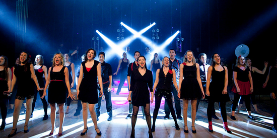
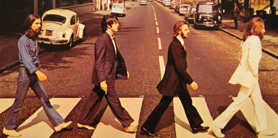
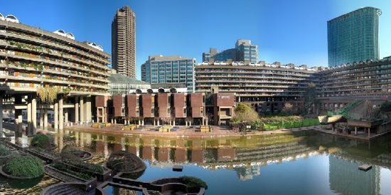
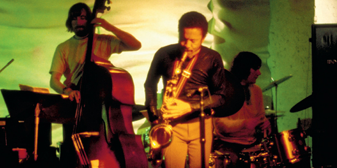
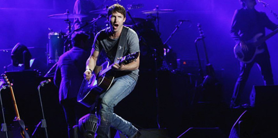
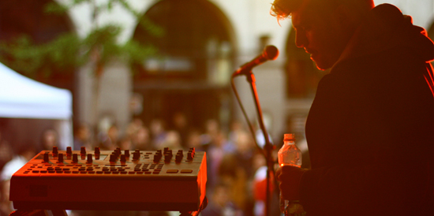

红砖市场Brick lane
不是一个普通的市集，而是充满活力与城市后现代风格的潮流集散地，年轻音乐人、创作艺术随处可见。满街满巷的淘宝市场让你尽情逛到脚软，露天酒吧和小吃大世界比肩继踵的感觉让你在人浪里随波荡漾欲罢不能。各式艺人表演也更给“红砖道”增添热闹气息。驾驶捷豹这款车出行的好处又一次体现，这绝不是一部只适合于传统、优雅行程的车型，同样也有着非常年轻活力的气质，到哪儿都不会显得突兀。
西区看场音乐剧Musicals
如果觉得古典芭蕾太阳春白雪，原版歌剧又太曲高和寡，那就选择在伦敦西区看一场老少咸宜的音乐剧吧。伦敦共有剧院约100个，西区就集中了四十多个，当之无愧地成为英国戏剧界的代称。就历史传统而言，西区则比美国百老汇要悠久得多。英国音乐剧的发展很少在舞蹈方面做特别突出的改进，而是把歌剧、轻歌剧以及音乐喜剧的传统与爵士乐、踢踏舞和芭蕾进行一定程度的结合，艺术门槛不高，男女老少都能欣赏。有这么多长演不衰的经典曲目，看一场似乎不过瘾，要不，再多买几张票？
披头士乐队The Beatles
披头士乐队是一支成立于1960年的英国利物浦摇滚乐队，乐队在流行音乐中取得了巨大成功。乐队的成员为John Lennon，Paul McCartney，George Harrison，以及Ringo Starr。The Beatles在20世纪60年代掀起了一阵“Beatlemania”（披头士狂热），引领了英伦入侵（British Invasion），是20世纪60年代的文化标志之一。在利物浦这座英格兰西北部充满活力的城市，你可以寻访约翰·列侬和保罗·麦克尼的童年故居，游览草莓地，顾名思义，那里就是《永远的草莓地》这首歌的灵感来源。你还要游览Beatles Story纪念馆，了解甲壳虫乐队的生活、他们所处的时代、他们的音乐和文化等引人入胜的内容。观赏乐队的纪念物收藏，了解他们如何得到机遇，体验他们的星运历程。
巴比肯中心Barbican
在巴比肯中心观看艺术表演一定会是一次难忘的经历，但开着捷豹XF的时候，也绝对别忘了它出色的环绕音响系统——因为你不仅可以随心播放来自收音机、外接设备或CD的最爱曲目；8个高效扬声器更能带来高保真、无压缩，与音乐厅如出一辙的非凡听觉体验。
酒吧赏爵士Jazz
迷人的伦敦之夜，如果不来点美酒和音乐似乎总少了些什么。富有传奇色彩的隆尼 · 史考特爵士俱乐部（Ronnie Scott's）于1959年由萨克斯风乐手隆尼·史考特创立，如今是伦敦首屈一指的爵士表演场。Mile Davis、Dizzy Gillespie等爵士乐大明星都曾在此倾情表演。夜已深，酒过三巡，灯光点缀的桌子环绕着小舞台排列，台上传来动人心扉的爵士乐。究竟是这醉人的夜色还是这魅惑的音乐让你沉醉？
詹姆斯·布朗特James Blunt
上尉诗人（The captain poet），亦作詹姆仕·布朗特，英国流行歌手，2004年10月11日发行首张个人专辑《Back to Bedlam》，凭借单曲You're Beautiful一举成名，有杂志评价他的声音为“堕落的天使”。在“You're Beautiful”中，他那忧郁的嗓音加上忧郁的音乐成就了这首忧郁歌曲的成功。
英国伦敦城市音乐节City Showcase
是在英国国家注册的音乐节，经官方核准的非赢利协会组织，起源于2003年，至今已经举办了5届，是英国最优秀的城市新音乐节，备受欧美唱片行业和时尚传媒业极大关注的官方活动之一。英国伦敦城市音乐节演出场地有Café De Paris、The End London和Fabric London等。Café De Paris坐落于伦敦最繁华的皮卡迪里大街（Piccadilly）。拥有顶级专业且设计奢华的舞池，以及顶级豪华的VIP贵宾室。